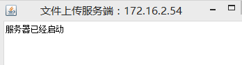
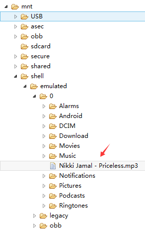
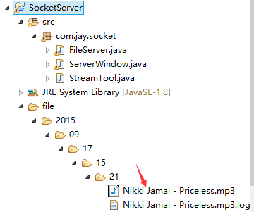
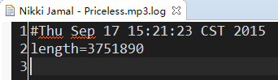

本節の導入：
前節では、Socketの基本的な概念と使用方法に触れ、簡単な子豚チャットルームの Demoを作成しました。皆さんはSocketについて初步的な理解を得られたことと思います。本節では、Socketを使用して大容量ファイルのレジューム転送を実現する方法を学びましょう！ ここで解説するのは、他の人が作成したSocketで大容量ファイルをアップロードする例です。自分で書ける必要はなく、必要なときに使えるだけで十分です！
1.実行効果図：
1.まず、作成済みのSocketサーバーを起動します：

2.オーディオファイルをSDカードのルートディレクトリに配置します：

3.クライアントを実行します：

4.アップロードに成功すると、サーバー側のプロジェクトの下にfileフォルダが生成されるのを確認できます。アップロードしたファイルはここで見つけることができます： .logは私たちのログファイルです


2.実装フローチャート：

3.コード例：
まず、サーバー側とクライアント側の両方で使用するストリーム解析クラスを作成します：
StreamTool.java：
public class StreamTool {
public static void save(File file, byte[] data) throws Exception {
FileOutputStream outStream = new FileOutputStream(file);
outStream.write(data);
outStream.close();
}
public static String readLine(PushbackInputStream in) throws IOException {
char buf[] = new char[128];
int room = buf.length;
int offset = 0;
int c;
loop: while (true) {
switch (c = in.read()) {
case -1:
case '\n':
break loop;
case '\r':
int c2 = in.read();
if ((c2 != '\n') && (c2 != -1)) in.unread(c2);
break loop;
default:
if (--room < 0) {
char[] lineBuffer = buf;
buf = new char[offset + 128];
room = buf.length - offset - 1;
System.arraycopy(lineBuffer, 0, buf, 0, offset);
}
buf[offset++] = (char) c;
break;
}
}
if ((c == -1) && (offset == 0)) return null;
return String.copyValueOf(buf, 0, offset);
}
/**
* 读取流
* @param inStream
* @return 字节数组
* @throws Exception
*/
public static byte[] readStream(InputStream inStream) throws Exception{
ByteArrayOutputStream outSteam = new ByteArrayOutputStream();
byte[] buffer = new byte[1024];
int len = -1;
while( (len=inStream.read(buffer)) != -1){
outSteam.write(buffer, 0, len);
}
outSteam.close();
inStream.close();
return outSteam.toByteArray();
}
}
1）サーバー側の実装：
Socket管理とマルチスレッド管理クラス：
FileServer.java：
public class FileServer {
private ExecutorService executorService;//线程池
private int port;//监听端口
private boolean quit = false;//退出
private ServerSocket server;
private Map<Long, FileLog> datas = new HashMap<Long, FileLog>();//存放断点数据
public FileServer(int port){
this.port = port;
//创建线程池，池中具有(cpu个数*50)条线程
executorService = Executors.newFixedThreadPool(Runtime.getRuntime().availableProcessors() * 50);
}
/**
* 退出
*/
public void quit(){
this.quit = true;
try {
server.close();
} catch (IOException e) {
}
}
/**
* 启动服务
* @throws Exception
*/
public void start() throws Exception{
server = new ServerSocket(port);
while(!quit){
try {
Socket socket = server.accept();
//为支持多用户并发访问，采用线程池管理每一个用户的连接请求
executorService.execute(new SocketTask(socket));
} catch (Exception e) {
// e.printStackTrace();
}
}
}
private final class SocketTask implements Runnable{
private Socket socket = null;
public SocketTask(Socket socket) {
this.socket = socket;
}
public void run() {
try {
System.out.println("accepted connection "+ socket.getInetAddress()+ ":"+ socket.getPort());
PushbackInputStream inStream = new PushbackInputStream(socket.getInputStream());
//得到客户端发来的第一行协议数据：Content-Length=143253434;filename=xxx.3gp;sourceid=
//如果用户初次上传文件，sourceid的值为空。
String head = StreamTool.readLine(inStream);
System.out.println(head);
if(head!=null){
//下面从协议数据中提取各项参数值
String[] items = head.split(";");
String filelength = items[0].substring(items[0].indexOf("=")+1);
String filename = items[1].substring(items[1].indexOf("=")+1);
String sourceid = items[2].substring(items[2].indexOf("=")+1);
long id = System.currentTimeMillis();//生产资源id，如果需要唯一性，可以采用UUID
FileLog log = null;
if(sourceid!=null && !"".equals(sourceid)){
id = Long.valueOf(sourceid);
log = find(id);//查找上传的文件是否存在上传记录
}
File file = null;
int position = 0;
if(log==null){//如果不存在上传记录,为文件添加跟踪记录
String path = new SimpleDateFormat("yyyy/MM/dd/HH/mm").format(new Date());
File dir = new File("file/"+ path);
if(!dir.exists()) dir.mkdirs();
file = new File(dir, filename);
if(file.exists()){//如果上传的文件发生重名，然后进行改名
filename = filename.substring(0, filename.indexOf(".")-1)+ dir.listFiles().length+ filename.substring(filename.indexOf("."));
file = new File(dir, filename);
}
save(id, file);
}else{// 如果存在上传记录,读取已经上传的数据长度
file = new File(log.getPath());//从上传记录中得到文件的路径
if(file.exists()){
File logFile = new File(file.getParentFile(), file.getName()+".log");
if(logFile.exists()){
Properties properties = new Properties();
properties.load(new FileInputStream(logFile));
position = Integer.valueOf(properties.getProperty("length"));//读取已经上传的数据长度
}
}
}
OutputStream outStream = socket.getOutputStream();
String response = "sourceid="+ id+ ";position="+ position+ "\r\n";
//服务器收到客户端的请求信息后，给客户端返回响应信息：sourceid=1274773833264;position=0
//sourceid由服务器端生成，唯一标识上传的文件，position指示客户端从文件的什么位置开始上传
outStream.write(response.getBytes());
RandomAccessFile fileOutStream = new RandomAccessFile(file, "rwd");
if(position==0) fileOutStream.setLength(Integer.valueOf(filelength));//设置文件长度
fileOutStream.seek(position);//指定从文件的特定位置开始写入数据
byte[] buffer = new byte[1024];
int len = -1;
int length = position;
while( (len=inStream.read(buffer)) != -1){//从输入流中读取数据写入到文件中
fileOutStream.write(buffer, 0, len);
length += len;
Properties properties = new Properties();
properties.put("length", String.valueOf(length));
FileOutputStream logFile = new FileOutputStream(new File(file.getParentFile(), file.getName()+".log"));
properties.store(logFile, null);//实时记录已经接收的文件长度
logFile.close();
}
if(length==fileOutStream.length()) delete(id);
fileOutStream.close();
inStream.close();
outStream.close();
file = null;
}
} catch (Exception e) {
e.printStackTrace();
}finally{
try {
if(socket!=null && !socket.isClosed()) socket.close();
} catch (IOException e) {}
}
}
}
public FileLog find(Long sourceid){
return datas.get(sourceid);
}
//保存上传记录
public void save(Long id, File saveFile){
//日后可以改成通过数据库存放
datas.put(id, new FileLog(id, saveFile.getAbsolutePath()));
}
//当文件上传完毕，删除记录
public void delete(long sourceid){
if(datas.containsKey(sourceid)) datas.remove(sourceid);
}
private class FileLog{
private Long id;
private String path;
public Long getId() {
return id;
}
public void setId(Long id) {
this.id = id;
}
public String getPath() {
return path;
}
public void setPath(String path) {
this.path = path;
}
public FileLog(Long id, String path) {
this.id = id;
this.path = path;
}
}
}
サーバー側UIクラス：ServerWindow.java：
public class ServerWindow extends Frame {
private FileServer s = new FileServer(12345);
private Label label;
public ServerWindow(String title) {
super(title);
label = new Label();
add(label, BorderLayout.PAGE_START);
label.setText("服务器已经启动");
this.addWindowListener(new WindowListener() {
public void windowOpened(WindowEvent e) {
new Thread(new Runnable() {
public void run() {
try {
s.start();
} catch (Exception e) {
// e.printStackTrace();
}
}
}).start();
}
public void windowIconified(WindowEvent e) {
}
public void windowDeiconified(WindowEvent e) {
}
public void windowDeactivated(WindowEvent e) {
}
public void windowClosing(WindowEvent e) {
s.quit();
System.exit(0);
}
public void windowClosed(WindowEvent e) {
}
public void windowActivated(WindowEvent e) {
}
});
}
/**
* @param args
*/
public static void main(String[] args) throws IOException {
InetAddress address = InetAddress.getLocalHost();
ServerWindow window = new ServerWindow("文件上传服务端：" + address.getHostAddress());
window.setSize(400, 300);
window.setVisible(true);
}
}
2）クライアント（Android側）
まずはレイアウトファイルです：activity_main.xml：
<?xml version="1.0" encoding="utf-8"?>
<LinearLayout xmlns:android="http://schemas.android.com/apk/res/android"
android:layout_width="fill_parent"
android:layout_height="fill_parent"
android:orientation="vertical"
android:padding="5dp">
<TextView
android:layout_width="fill_parent"
android:layout_height="wrap_content"
android:text="文件名"
android:textSize="18sp" />
<EditText
android:id="@+id/edit_fname"
android:layout_width="fill_parent"
android:layout_height="wrap_content"
android:text="Nikki Jamal - Priceless.mp3" />
<Button
android:id="@+id/btn_upload"
android:layout_width="wrap_content"
android:layout_height="wrap_content"
android:text="上传" />
<Button
android:id="@+id/btn_stop"
android:layout_width="wrap_content"
android:layout_height="wrap_content"
android:text="停止" />
<ProgressBar
android:id="@+id/pgbar"
style="@android:style/Widget.ProgressBar.Horizontal"
android:layout_width="fill_parent"
android:layout_height="40px" />
<TextView
android:id="@+id/txt_result"
android:layout_width="fill_parent"
android:layout_height="wrap_content"
android:gravity="center" />
</LinearLayout>
レジューム転送のため、アップロードの進捗を保存する必要があり、データベースを使用する必要があります。ここではデータベース 管理クラスを定義します：DBOpenHelper.java：：
/**
* Created by Jay on 2015/9/17 0017.
*/
public class DBOpenHelper extends SQLiteOpenHelper {
public DBOpenHelper(Context context) {
super(context, "jay.db", null, 1);
}
@Override
public void onCreate(SQLiteDatabase db) {
db.execSQL("CREATE TABLE IF NOT EXISTS uploadlog (_id integer primary key autoincrement, path varchar(20), sourceid varchar(20))");
}
@Override
public void onUpgrade(SQLiteDatabase db, int oldVersion, int newVersion) {
}
}
次にデータベース操作クラスです：UploadHelper.java：
/**
* Created by Jay on 2015/9/17 0017.
*/
public class UploadHelper {
private DBOpenHelper dbOpenHelper;
public UploadHelper(Context context) {
dbOpenHelper = new DBOpenHelper(context);
}
public String getBindId(File file) {
SQLiteDatabase db = dbOpenHelper.getReadableDatabase();
Cursor cursor = db.rawQuery("select sourceid from uploadlog where path=?", new String[]{file.getAbsolutePath()});
if (cursor.moveToFirst()) {
return cursor.getString(0);
}
return null;
}
public void save(String sourceid, File file) {
SQLiteDatabase db = dbOpenHelper.getWritableDatabase();
db.execSQL("insert into uploadlog(path,sourceid) values(?,?)",
new Object[]{file.getAbsolutePath(), sourceid});
}
public void delete(File file) {
SQLiteDatabase db = dbOpenHelper.getWritableDatabase();
db.execSQL("delete from uploadlog where path=?", new Object[]{file.getAbsolutePath()});
}
}
そうそう、クライアントにもそのストリーム解析クラスを貼り付けるのを忘れないでください。最後は私たちのMainActivity.javaです：
public class MainActivity extends AppCompatActivity implements View.OnClickListener {
private EditText edit_fname;
private Button btn_upload;
private Button btn_stop;
private ProgressBar pgbar;
private TextView txt_result;
private UploadHelper upHelper;
private boolean flag = true;
private Handler handler = new Handler() {
@Override
public void handleMessage(Message msg) {
pgbar.setProgress(msg.getData().getInt("length"));
float num = (float) pgbar.getProgress() / (float) pgbar.getMax();
int result = (int) (num * 100);
txt_result.setText(result + "%");
if (pgbar.getProgress() == pgbar.getMax()) {
Toast.makeText(MainActivity.this, "上传成功", Toast.LENGTH_SHORT).show();
}
}
};
@Override
public void onCreate(Bundle savedInstanceState) {
super.onCreate(savedInstanceState);
setContentView(R.layout.activity_main);
bindViews();
upHelper = new UploadHelper(this);
}
private void bindViews() {
edit_fname = (EditText) findViewById(R.id.edit_fname);
btn_upload = (Button) findViewById(R.id.btn_upload);
btn_stop = (Button) findViewById(R.id.btn_stop);
pgbar = (ProgressBar) findViewById(R.id.pgbar);
txt_result = (TextView) findViewById(R.id.txt_result);
btn_upload.setOnClickListener(this);
btn_stop.setOnClickListener(this);
}
@Override
public void onClick(View v) {
switch (v.getId()) {
case R.id.btn_upload:
String filename = edit_fname.getText().toString();
flag = true;
if (Environment.getExternalStorageState().equals(Environment.MEDIA_MOUNTED)) {
File file = new File(Environment.getExternalStorageDirectory(), filename);
if (file.exists()) {
pgbar.setMax((int) file.length());
uploadFile(file);
} else {
Toast.makeText(MainActivity.this, "文件并不存在~", Toast.LENGTH_SHORT).show();
}
} else {
Toast.makeText(MainActivity.this, "SD卡不存在或者不可用", Toast.LENGTH_SHORT).show();
}
break;
case R.id.btn_stop:
flag = false;
break;
}
}
private void uploadFile(final File file) {
new Thread(new Runnable() {
public void run() {
try {
String sourceid = upHelper.getBindId(file);
Socket socket = new Socket("172.16.2.54", 12345);
OutputStream outStream = socket.getOutputStream();
String head = "Content-Length=" + file.length() + ";filename=" + file.getName()
+ ";sourceid=" + (sourceid != null ? sourceid : "") + "\r\n";
outStream.write(head.getBytes());
PushbackInputStream inStream = new PushbackInputStream(socket.getInputStream());
String response = StreamTool.readLine(inStream);
String[] items = response.split(";");
String responseSourceid = items[0].substring(items[0].indexOf("=") + 1);
String position = items[1].substring(items[1].indexOf("=") + 1);
if (sourceid == null) {//如果是第一次上传文件，在数据库中不存在该文件所绑定的资源id
upHelper.save(responseSourceid, file);
}
RandomAccessFile fileOutStream = new RandomAccessFile(file, "r");
fileOutStream.seek(Integer.valueOf(position));
byte[] buffer = new byte[1024];
int len = -1;
int length = Integer.valueOf(position);
while (flag && (len = fileOutStream.read(buffer)) != -1) {
outStream.write(buffer, 0, len);
length += len;//累加已经上传的数据长度
Message msg = new Message();
msg.getData().putInt("length", length);
handler.sendMessage(msg);
}
if (length == file.length()) upHelper.delete(file);
fileOutStream.close();
outStream.close();
inStream.close();
socket.close();
} catch (Exception e) {
Toast.makeText(MainActivity.this, "上传异常~", Toast.LENGTH_SHORT).show();
}
}
}).start();
}
}
最後に、**AndroidManifest.xml**にこれらの権限を書き込むことも忘れないでください！
<!-- 在SDCard中创建与删除文件权限 --> <uses-permission android:name="android.permission.MOUNT_UNMOUNT_FILESYSTEMS"/> <!-- 往SDCard写入数据权限 --> <uses-permission android:name="android.permission.WRITE_EXTERNAL_STORAGE"/> <!-- 访问internet权限 --> <uses-permission android:name="android.permission.INTERNET"/>
4.コードダウンロード：
5.本節のまとめ：
本節では、TCPプロトコルに基づくSocketのもう一つの実例を紹介しました：Socketを使用した大容量ファイルのレジューム転送です。 皆さんのSocketへの理解もさらに深まったことと思います。では、次の節でもう一つ例を書きましょう。同じWi-Fi 環境下にある2台のスマートフォンが互いにデータを送受信する例です！それではこの辺で、ありがとうございました〜
クリックしてノートを共有
<p style="font-size:14px;">ノートは本記事の内容を拡張したものである必要があります！</p><br> <p style="font-size:12px;"><a href="../tougao.html" target="_blank">記事投稿は、ここをクリックしてください</a></p> <p style="font-size:14px;"><a href="./runoob-user-test-intro.html" target="_blank">登録招待コードの取得方法</a></p> <h3 class="text-muted"><i class="fa fa-info-circle" aria-hidden="true"></i> ノートを共有する前に<a href=".." class="runoob-pop">ログイン</a>が必要です！</h3> <p><a href="./runoob-user-test-intro.html" target="_blank">登録招待コードの取得方法</a></p>